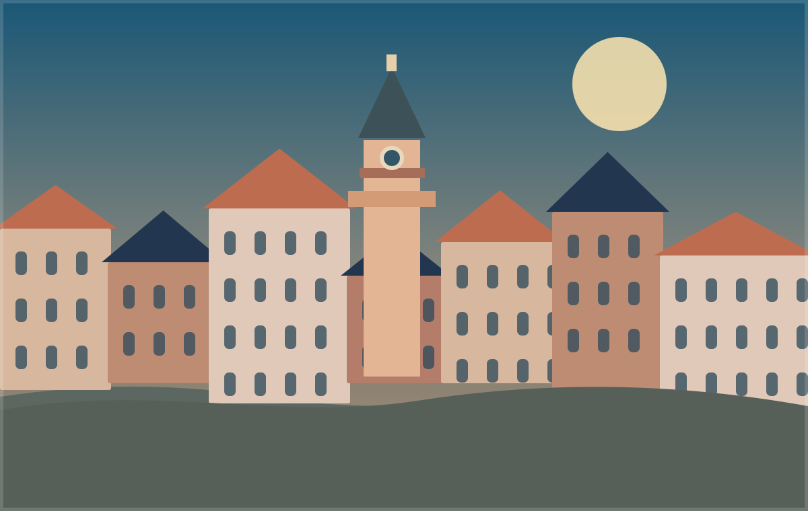

Площа Ринок
Почати знайомство з містом найкраще біля Ратуші, звідки легко дістатися до старовинних кам’яниць і затишних провулків.
Місто, у якому навіть звичайна прогулянка стає маленькою пригодою. Кам’яниці, бруківка, кав’ярні та несподівані дворики запрошують загубитися на кілька годин.

Місто, у якому навіть звичайна прогулянка стає маленькою пригодою. Кам’яниці, бруківка, кав’ярні та несподівані дворики запрошують загубитися на кілька годин.
Почати знайомство з містом найкраще біля Ратуші, звідки легко дістатися до старовинних кам’яниць і затишних провулків.
Львівська гастрономія — це аромат обсмаженої кави, тепла випічка та сирник, який хочеться скуштувати ще раз.
Львів відомий своєю архітектурною спадщиною, театрами й атмосферою, у якій переплітаються різні історичні традиції.
Уявімо вечір, коли ми з друзями виходимо на площу Ринок без маршруту. Здається, що найкращі історії починаються саме з таких випадкових поворотів.